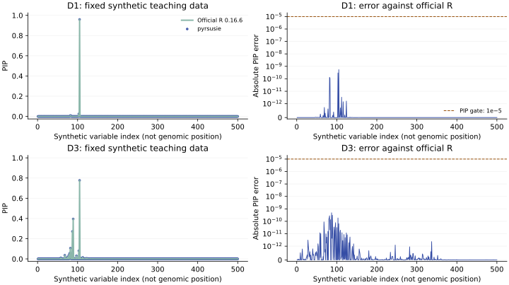

On this page
Executed agreement with official R
All seven fixed 500-SNP teaching cases passed the PIP comparison with official susieR 0.16.6, with maximum absolute errors from 1.6e-10 to 3.55e-9, below atol=1e-5, rtol=0. Input/model and probability checks also passed. The deliberately capped one-iteration case remains nonconverged, and the strict-purity case returns no credible sets. These synthetic software examples do not establish a universal error bound or identical intermediate arrays, credible sets, Bayes factors or downstream posteriors.
The tables record the original executed binary, identified in the reproducibility appendix. The command below checks your installed version against the same frozen R outputs; it does not rerun R or overwrite expectations.
Reproduce the offline check
After following installation, run from the checkout:
python examples/check_example.py --output-dir example-results
Only the installed package and NumPy are required. The checker verifies
checksums, calls prusie.susie_rss, compares its newly computed PIPs to
independent frozen R outputs, writes numeric actual output and a JSON report,
and exits nonzero on a substantive mismatch. It never invokes R or refreshes
goldens. A version change is recorded rather than treated as a numerical failure.
Exact model and cases
Primary fits use signed z = beta / √varbeta, stored signed LD r, n=1000, L=10, max_iter=100, tol=0.001, coverage=0.95, min_abs_corr=0.5, n_purity=500, standardize=True, estimate_prior_variance=True, estimate_prior_method="optim", scaled_prior_variance=0.2, estimate_residual_variance=False, check_null_threshold=0, prior_tol=1e-9, null_weight=0, refine=False, track_fit=False and verbose=False. Float64 IBSS updates remain sequential. No phenotype variance is guessed; this is the known-n z-RSS model.
D1/D2/D4 are stored single-signal teaching datasets; D3 has two stored causal
variables. D1_partial_zero changes only the prior weights: zero at every seventh
one-based index, one elsewhere. D3_strict_purity changes only min_abs_corr to1.
D3_one_iteration changes only max_iter to1 and is an explicit nonconvergence
diagnostic, excluded from the primary100-iteration scientific-fit description.
Full arguments and input metadata are frozen in examples/data/parameters.json
and metadata.json. The original variable order is fixed by variants.tsv on
both LD axes.
Measured PIP and structural results
The numerical gate is PIP absolute error ≤1e-5, rtol=0, with input/model and probability validity. Convergence, iterations, component arrays and CS differences remain diagnostics. CS return order is immaterial: rows are compared by the original zero-based component ID, without relabeling effects.
| Case | Maximum PIP error | Iterations native / R | Converged native / R | Native CS count | CS IDs and members | Gate |
|---|---|---|---|---|---|---|
| D1 | 5.47e-10 | 2 / 2 | True / True | 1 | same | PASS |
| D2 | 2.01e-10 | 2 / 2 | True / True | 1 | same | PASS |
| D3 | 4.84e-10 | 8 / 8 | True / True | 2 | same | PASS |
| D4 | 8.81e-10 | 2 / 2 | True / True | 1 | same | PASS |
| D1_partial_zero | 1.6e-10 | 2 / 2 | True / True | 1 | same | PASS |
| D3_strict_purity | 4.84e-10 | 8 / 8 | True / True | 0 | same | PASS |
| D3_one_iteration | 3.55e-09 | 1 / 1 | False / False | 1 | same | PASS |

D1 and D3 display the single- and multi-signal examples. Every case remains in the table; the plot is not a selected acceptance panel. The error axis is symmetric-log with a linear region below1e-12 so exact zeros remain visible. The horizontal index is synthetic, not a genomic position.
Returned coverage and purity
Returned coverage is the alpha mass of each actual CS in its original component. The checker independently uses that row and the returned members, and recomputes complete-pair purity from signed LD. It does not replace returned coverage with the requested0.95. These identity checks use fixed absolute1e-10 arithmetic tolerance; they are distinct from the PIP comparison gate.
| Case | Original component (0-based) | Members (0-based) | Returned native mass | Absolute mass difference from R | Minimum absolute r |
|---|---|---|---|---|---|
| D1 | 0 | 104 | 0.959396812596 | 5.47e-10 | 1 |
| D2 | 0 | 102, 104, 108, 115 | 0.965522548049 | 7.82e-11 | 0.834750954 |
| D3 | 0 | 81, 102, 104 | 0.962856945063 | 3.31e-11 | 0.771180152 |
| D3 | 1 | 57, 67, 68, 72, 74, 79, 80, 83, 86, 88, 96, 107, 112 | 0.951751227277 | 1.96e-10 | 0.676934006 |
| D4 | 0 | 104, 155 | 0.965753529562 | 4.87e-10 | 0.710430289 |
| D1_partial_zero | 0 | 81, 82, 102 | 0.994879557081 | 1.75e-11 | 0.784894594 |
| D3_one_iteration | 0 | 102, 104 | 0.969776865766 | 7.79e-11 | 0.915096146 |
D3_strict_purity has no credible sets: member/index/coverage/purity arrays are empty and coverage is unavailable, not zero. Its PIPs remain available. The one-iteration diagnostic is not silently refitted; its returned values and nonconvergence warnings remain in the evidence.
Raw numerical diagnostics
These maxima are recorded even though intermediate equality is not the release gate. No tolerance is increased after observing a difference. Additional lbf, sigma2 and KL errors and native-snapshot comparisons appear in the JSON record.
| Case | alpha | mu | mu2 | lbf_variable | V | ELBO |
|---|---|---|---|---|---|---|
| D1 | 5.47e-10 | 8.49e-10 | 4.28e-10 | 1.07e-07 | 1.38e-08 | 4.09e-12 |
| D2 | 2.01e-10 | 1.15e-10 | 5.37e-11 | 1.32e-08 | 1.44e-09 | 6.82e-13 |
| D3 | 4.84e-10 | 3.59e-10 | 1.29e-10 | 1.58e-07 | 9e-09 | 3.36e-08 |
| D4 | 8.81e-10 | 5.37e-10 | 2.11e-10 | 5.25e-08 | 4.09e-09 | 2.27e-12 |
| D1_partial_zero | 1.6e-10 | 1.35e-10 | 6.8e-11 | 1.49e-08 | 1.68e-09 | 3.41e-12 |
| D3_strict_purity | 4.84e-10 | 3.59e-10 | 1.29e-10 | 1.58e-07 | 9e-09 | 3.36e-08 |
| D3_one_iteration | 3.55e-09 | 1.07e-09 | 2.34e-10 | 3.69e-08 | 6.46e-09 | 7.2e-09 |
The checker recomputes alpha row sums, marginal PIP from active components, returned CS coverage and purity; verifies SNP order, immutable input arrays, model options and valid variances; and keeps official-R outputs, native frozen snapshots and mathematical identities distinct. The native snapshot is useful for reproducibility but is not an independent statistical oracle.
Boundaries and intentional behavior
- The reference adds √ε before logging SER prior weights. A supplied zero weight is not a hard exclusion from active component posteriors. Final low-V trimming restores the exact normalized prior. Partial-zero weights here are an index-defined software edge case, not biological prior information.
- The native interface uses zero-based components and members and explicit empty CS arrays. R raw sets and one-based IDs are preserved separately in the bundle.
- Nonconvergence is a distinct status. Passing an arithmetic comparison does not make the one-iteration result a converged scientific inference.
- The teaching data do not provide genome build, ancestry, real coordinates or counted/effect alleles. Their synthetic variable identities must not be presented as real biological annotations. Stored sdY is retained, but the demonstrated z-RSS fit does not use a supplied phenotype variance.
- The supported Gaussian scope excludes nondefault initialization/refinement, individual-level regression, LD-mismatch models, mixture/infinitesimal priors, greedy updates and the other methods listed in compatibility. Invalid data are rejected rather than silently repairing LD.
- The separate real-region performance panel is not redistributed with these synthetic examples. See performance for its denominator, baseline and convergence limits.
Reproducibility appendix
The reference is official susieR 0.16.6, commit
8e56a8e038e989856d106d9ca5175cc664fea9d2, executed independently in R 4.4.0 with Netlib BLAS and one numerical thread. The data are the
unmodified stored D1–D4 teaching fixtures from official coloc 6.0.3, commit
8f20f0bc5e60ffc99e4c2f787bd55fd30cfe7c45. Each has exactly 500 distinct
synthetic variables and stored n=1000. No resimulation, padding, SNP subsetting
or selection based on agreement was performed. These are synthetic software
examples, not new biological evidence.
The original binary was pyrsusie 0.2.3rc4, before the public rename.
Exact source hashes identify its Python, Rust and
build files (manifest SHA256
c2e7334b3f4655cd6e36b5d528567c65e54ae9de4120cbeeda3521a01b44b91c).
The recorded measurements retain that identity; this report is not a timing run.
| Runtime field | Observed value |
|---|---|
| Python | 3.12.2 |
| NumPy | 2.2.6 |
| Native backend | pyrsusie-rust/0.2.3-rc.4; susieR-reference/0.16.6@8e56a8e038e989856d106d9ca5175cc664fea9d2 |
| SER math route | optional_glibc_libmvec_avx2_masked_exp |
| Architecture | x86_64 |
| Input/reference manifest SHA256 | c3485fe1c5da1bd7012401eb4d85cc860cc1c2fdbc26f055f4b25240cca66abe |
| Shared checksum manifest SHA256 | 2e084ad2c77ecd48e8d07cddff8ea332c18efa93672141cf7e562fec3e8071ee |
The complete machine-readable evidence records
the executed parameters, per-input and order hashes, every compared field,
warnings and component-aligned diagnostics. The bundled reference.lock.json
and reference_environment.json provide pinned source archive/data hashes and
the actual R dependency versions. See the frozen data provenance and regeneration recipe.
Regeneration uses pinned R 4.4.0, coloc 6.0.3 and susieR 0.16.6 in a separate
directory. Exported reference arrays retain about 15 significant digits, well
below the frozen comparison tolerances. The contributor guide
describes checksum and numerical failure controls.